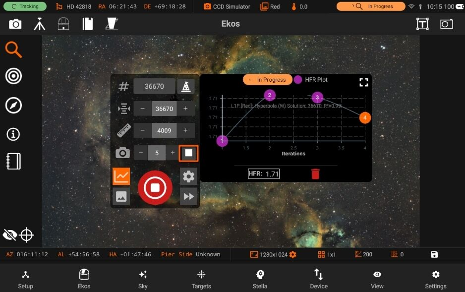

Focus
StellarMate App Focus module goal is to get crisp images either automatically via an electronic focuser, or manually by adjusting the focus knob.

Quick Focus Guide
For optimal performance, ensure the telescope is positioned near the Critical Focus Zone (CFZ). Avoid initiating autofocus when stars are barely visible or overly bloated. For reflectors, consider enabling the Donus Buster feature to address donut-shaped stars.
Before starting autofocus for the first time, run the Focus Advisor to fine-tune settings for your specific optical setup.
- Absolute Focuser: While many parameters and settings play a role in a successful Autofocus run, two parameters are important to consider:
- Step Size: This is the value the autofocus algorithm uses to map the V-curve. Too small of a step size and it would not be able to find the minima. Conversely, very large step sizes might miss the minima. A good step size is where you notice changes in the reported HFR value by more than 0.2. Since it can be hard for some setup to estimate the optimal value, the Focus Advisor can be used to empirically measure the best step size for your particular setup.
- Exposure duration: Use a reasonable value of more than 1 second and less than 5 seconds. If stars are not visible by 5 seconds, try adjusting the gain.
Manual Focuser
Tap the loop icon to start the framing process. Adjust the focuser manually while monitoring the HFR values in the chart. Make gentle and slow adjustments.

DSLR Cameras
DSLR cameras like Canon and Nikon have built-in focusers. There is limited support for autofocusing using these cameras mainly due to the limited focusing capabilities.
Focuser Group All INDI-compatible focusers are supported. It is recommended to use absolute focusers for the best results since their absolute position is known on power up. In INDI, the focuser zero position is when the drawtube is fully retracted. When focusing outwards, the focuser position increases, while it decreases when focusing inwards. The following focuser types are supported:
• Absolute: Absolute Position Focusers such as RoboFocus, MoonLite, ASI ZWO
• Relative: Relative Position Focusers.
• Time Based: Time based focusers with no position feedback that adjust focus position by moving for a certain amount of time. The Focuser field contains the focuser in the attached Optical Train.
For absolute and relative focusers, the step size is in units of ticks and for simple, or time based, focusers, the step size is in milliseconds. The In and Out buttons can then be used to move the focuser by the number of ticks defined in the Initial Step Size field in the Mechanics tab.
Optical train group

Optical Train group displays the currently selected Optical Train. By default this will be the primary imaging train, but other trains can be selected. The group consists of:
- Train: The Optical Train currently in use by the Focus tab. Hover the mouse over this field for a more detailed description of the selected train.
- Edit Button: Brings up the Optical Train dialog to view and potentially change the optical trains. Focus parameters are saved per Optical Train automatically and so multiple trains can be setup to manage different configurations with different parameters. When a new Optical Train is created, Focus will attempt to default parameters from other, similar Optical Trains. The attributes that must match for this are the Focuser and the scope type. If this is the first train for the selected Focuser and scope type then default parameters are created.
It is recommended to use the Focus Advisor tool on new Optical Trains to set parameters appropriately.